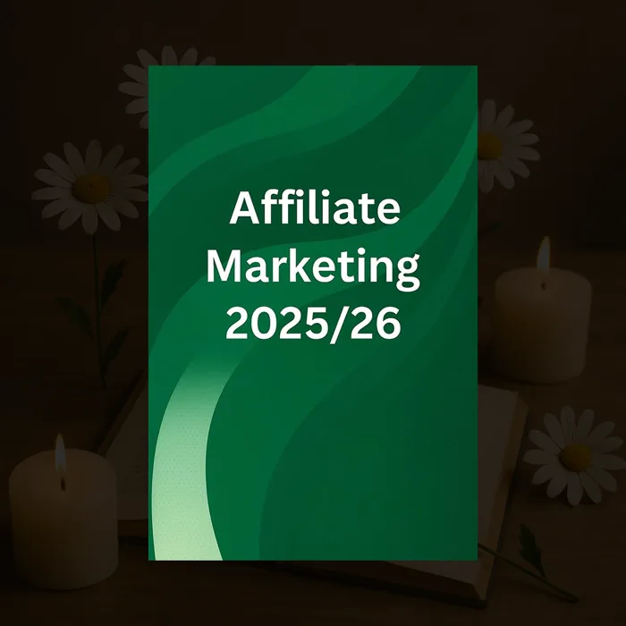

Immer mehr Menschen interessieren sich für Affiliate Marketing. Doch wer anfängt, merkt schnell: es gibt unglaublich viele Informationen, Tools und Strategien – aber kaum einen klaren Fahrplan.
Genau hier setzt mein neues Projekt an: Affiliate Marketing 2025/26.
Es ist kein klassisches Ratgeberbuch, sondern ein Arbeitsbuch, das den Weg über sechs Monate begleitet.
Warum sechs Monate?
- Affiliate Marketing ist kein „Über-Nacht-Erfolg“. Es braucht Zeit, um:
- ein passendes Produkt zu finden,
- eine Zielgruppe aufzubauen,
- Content zu erstellen,
- und die ersten Verkäufe zu erzielen.
Mit einem realistischen Zeitrahmen können Anfänger Schritt für Schritt vorgehen, ohne überfordert zu sein.
🤖 KI als Unterstützerin im Alltag
2025/26 spielt Künstliche Intelligenz eine zentrale Rolle.
Ob Texte, Landingpages oder einfache Designs – KI-Tools helfen dabei, schneller zu starten und Routinearbeiten zu vereinfachen. Das Buch zeigt, wie KI sinnvoll eingebunden werden kann, ohne dass man technische Vorkenntnisse braucht.
🧪 Praxis statt Theorie – mit echten Projekten
Anhand von zwei Praxisprojekten – einem Beispiel über Amazon und einem über Digistore24 – können Leser den kompletten Prozess nachvollziehen: von der Produktauswahl bis zum ersten Verkauf.
🎯 Für wen ist dieses Arbeitsbuch geeignet?
Für alle, die sich ernsthaft mit Affiliate Marketing beschäftigen wollen – Schritt für Schritt, strukturiert, mit realistischen Erwartungen. Besonders für Einsteiger*innen, die sich vom Info-Dschungel überfordert fühlen, ist dieses Buch ein wertvoller Begleiter.
📘 Jetzt mit System starten
Hol dir dein persönliches Arbeitsbuch für 2025/26 – und leg den Grundstein für nachhaltigen Online-Erfolg mit KI und klarer Strategie.
🚀 Jetzt durchstartenIch habe dieses Arbeitsbuch entwickelt, weil ich weiß, wie schwierig der Anfang im Affiliate Marketing sein kann – gerade wenn man allein startet. Dieses Buch soll dir Struktur, Motivation und Klarheit geben. Ich wünsche dir viel Erfolg beim Umsetzen!